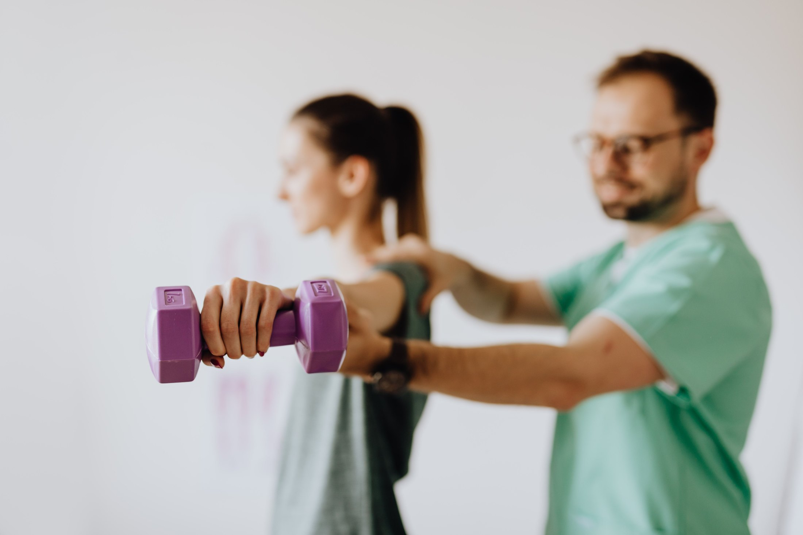
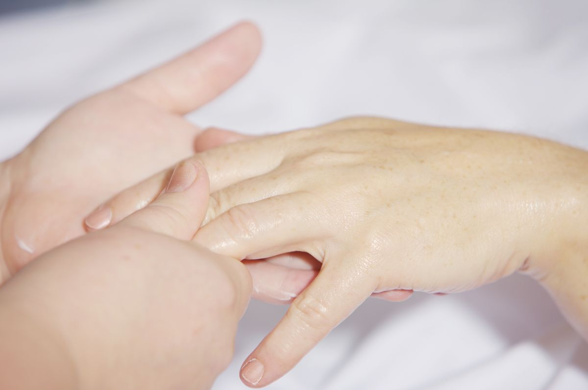
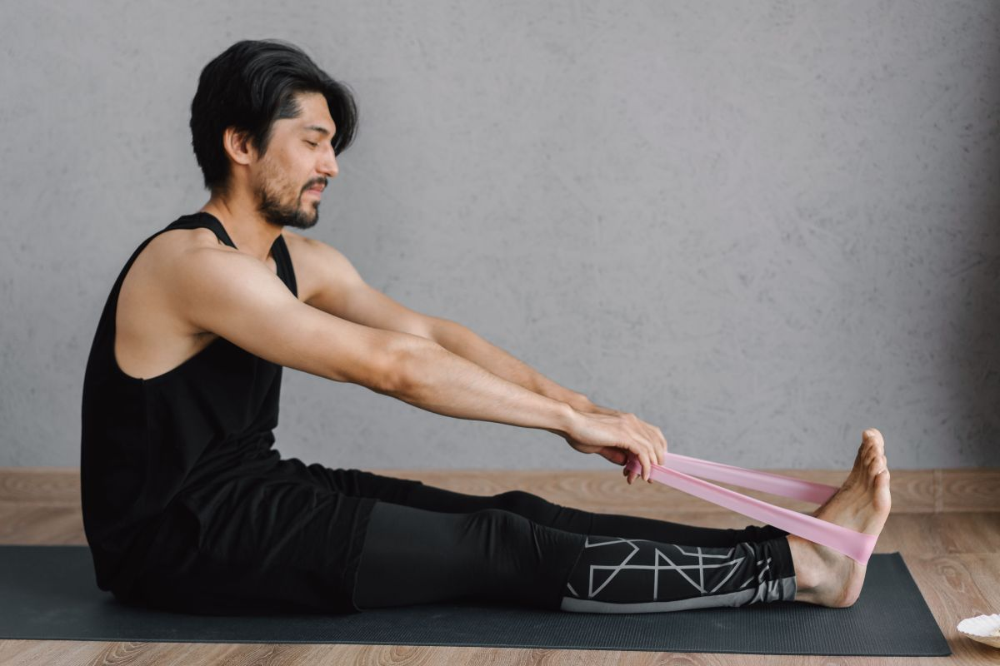
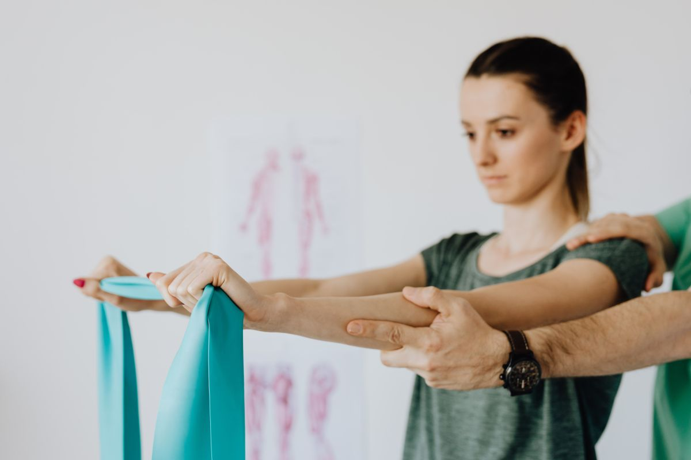
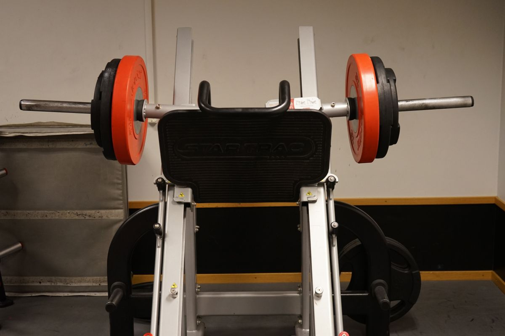
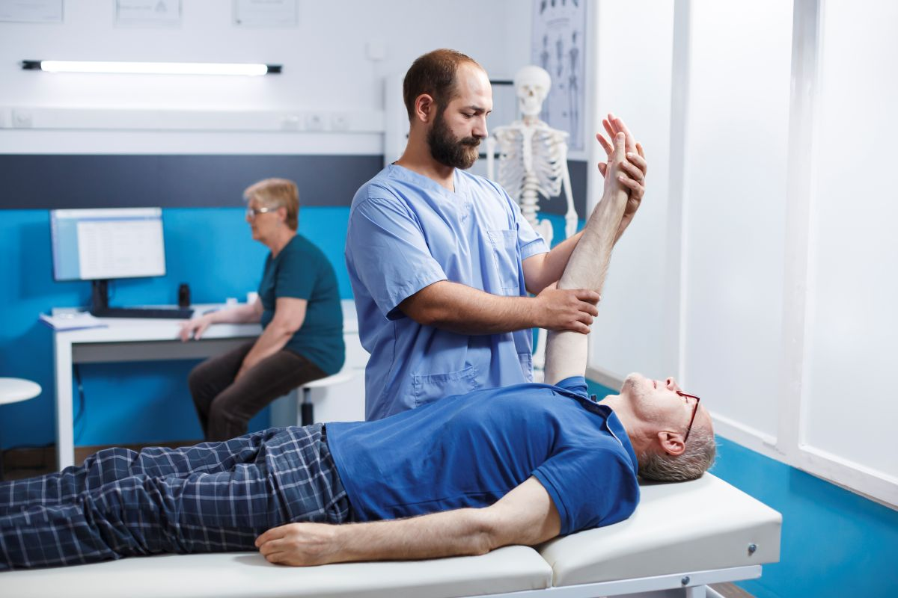

01
Equipamiento fijo
Camilla, colchonetas, bandas, pesos y máquinas quedan acá. No hay que adaptar el tratamiento a lo que cabe en un bolso.
Villarrica · Camilo Henríquez 280, of. 5
Centro de rehabilitación kinésica. Y una explicación de cómo avanza de verdad un tratamiento, para que no lo deje justo cuando estaba funcionando.
01 — Lo que se explica poco y hace abandonar
Casi todo el mundo llega esperando mejorar un poco cada sesión. No funciona así, y por eso mucha gente abandona en la tercera o cuarta — justo en el punto donde el tratamiento estaba haciendo su trabajo. Esto es lo que suele pasar.
Etapa 1
Las primeras sesiones suelen dar un alivio notorio. Baja la inflamación, cede el dolor agudo, y uno se siente mucho mejor de lo que está.
El riesgo de esta etapa es volver a la actividad normal antes de tiempo. La molestia se fue; la causa no.
Etapa 2
De pronto deja de notarse el avance. Dos, tres sesiones iguales. Acá es donde la mayoría abandona, convencida de que ya no está sirviendo.
Es exactamente al revés: en la meseta el trabajo pasó del dolor a la función —fuerza, control, resistencia— y eso no se siente día a día. Se nota después.
Etapa 3
Un día vuelve la molestia. Suele coincidir con haber hecho algo que hace tiempo no se hacía, o con haber subido la carga en las sesiones.
No es que se haya perdido lo ganado. Es que el cuerpo está trabajando en un nivel nuevo. Avísele a su kinesiólogo: se ajusta y se sigue.
Etapa 4
La recuperación termina cuando usted puede hacer lo que hacía antes, no cuando deja de doler. Son dos momentos distintos, y el segundo llega bastante después del primero.
Esto es orientación general sobre cómo suele avanzar un proceso de rehabilitación, no un pronóstico ni una indicación clínica. Cuántas sesiones necesita usted, con qué frecuencia y hasta dónde puede exigirse lo determina su kinesiólogo después de evaluarlo. Cada lesión y cada persona van a su ritmo.
Treinta y siete reseñas.
Las treinta y siete con cinco.
02 — Qué cambia en un centro
01
Camilla, colchonetas, bandas, pesos y máquinas quedan acá. No hay que adaptar el tratamiento a lo que cabe en un bolso.
02
La segunda mitad de una rehabilitación es ejercicio con carga y control. Eso necesita metros, no un living.
03
Un centro permite continuidad: si un profesional no está, el tratamiento no se detiene dos semanas.
Descripción general de lo que distingue a un centro de rehabilitación. El equipamiento real, cuántos profesionales son y qué especialidades cubren lo confirma AITUE: la ficha de Google no lo publica y no se inventó nada.

La parte que no se ve venir
Volver a hacer lo que hacía
toma más que dejar de doler.
03 — Antes de la primera sesión
Lo último es lo más importante y lo que la gente menos prepara. La evaluación se arma con eso.
04 — El centro





05 — Contacto
Para el equipo de AITUE
No es conseguir pacientes nuevos: con 5,0 en 37 reseñas eso ya funciona. Es que los pacientes terminen el tratamiento. La gente abandona en la meseta —la tercera o cuarta sesión— porque nadie le explicó que la meseta existe.
Un paciente que abandona a la mitad no vuelve, no recomienda, y además queda convencido de que no le sirvió. Explicar la curva antes de empezar cuesta una página y salva la mitad de esos casos.